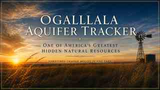
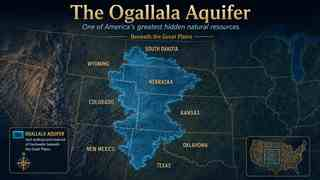

1950
100
Baseline
Northern: Healthy
Central: Healthy
Southern: Healthy
Central: Healthy
Southern: Healthy

The water beneath the Great Plains is largely invisible. Version 3 brings the story above and below ground together—time, place, communities, water levels, pressure, and practical choices.

The Ogallala is not a single bathtub that rises and falls evenly. Conditions vary across the High Plains, which is why Version 3 separates the story into Northern, Central, and Southern basin views and then brings the user down to community scale.
The goal is simple: make groundwater change understandable without pretending the science is simpler than it is.
Open the Geographic TimelineVersion 3 keeps the four anchor years easy to compare. The percentages below are Tracker working indices for communicating change over time—not percentages of the aquifer's remaining water.
Version 3 is being organized around the connections a reader can actually feel: what happens beneath a farm or town, what changes around a community, and what choices above ground influence demand and resilience.
Levels, drawdown, monitoring wells, water quality, and the difference between basin-wide pressure and local conditions.
Farmers, towns, rural homeowners, schools, property, infrastructure, and the local decisions that shape groundwater use.
Irrigation, water-wise yards, pollinators, industry, digital infrastructure, and practical ways to reduce unnecessary pressure.
Move from 1950 through 2050. Compare basin conditions, communities, present-day hotspot context, and verified 2026 infrastructure examples.
Explore the map → PersonalizedThe Alliance-centered subscriber experience: local groundwater context, profiles, useful actions, Water-Wise Living, and saved information.
Open My Aquifer → Below GroundA subsurface view designed to help people picture the saturated aquifer beneath Nebraska instead of thinking of groundwater as an invisible abstraction.
Look beneath the prairie →“You cannot borrow from tomorrow’s groundwater.”
Understand it. Use it wisely. Leave something for the people who come next.